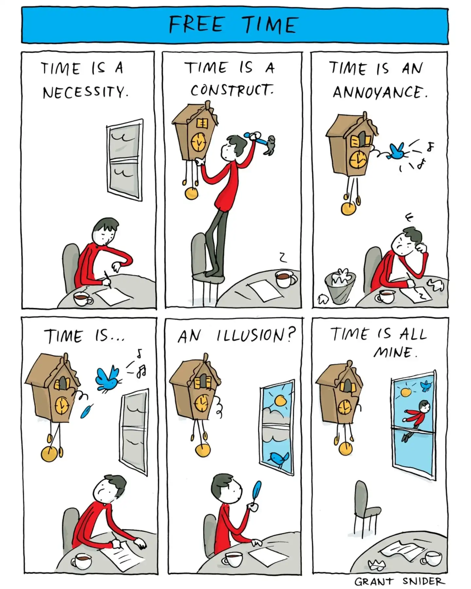

Happy Friday! Thank you for supporting the Daily Bulletin project.
- Suggest improvements to the Daily Bulletin project.
- Unsubscribe if you no longer wish to receive emails from the Daily Bulletin project.
Wellbeing Inspirations
Want to contribute to a future Daily Bulletin? Share your inspirations to give everyone some morning wellbeing energy!
Cartoon of the Day

Created by Grant Snider.
Delicious Dinings
| Day | Meal | Options |
|---|---|---|
| Fri | Breakfast | Burrito |
| Lunch | Fish & Chips | |
| Crispy Buttermilk Quorn 🌱 | ||
| Dinner | Vegan Chow Mein Noodles 🌱 | |
| Crispy Buttermilk Quorn 🌱 | ||
| Sat | Breakfast | Hot Breakfast |
| Lunch | BBQ Beef Burgers | |
| BBQ Quorn Burgers 🌱 | ||
| Dinner | Vegetarian Cottage Pie 🌱 | |
| Braised Red Cabbage 🌱 |
The catering team would like to remind everyone to wash their hands before coming to the dining hall, and to refrain from eating in the servery area. Thank you!
Retrieved from Shared Weekly Menu. For reference only; accuracy not guaranteed.
Important Events
| Day | Time | Event | Location |
|---|---|---|---|
| Fri | 14:00–14:30 | Tutorial | Tutor Rooms |
| 14:30–15:00 | Community Gathering | Sports Hall | |
| 15:00–16:00 | University Visits | Library | |
| 20:00–22:00 | Hideout | Moondance | |
| 20:30–22:00 | SOSH | Tythe Barn | |
| Sat | 08:00– 9:00 | Breakfast | Dinning Hall |
| 10:00–16:00 | Open Day | Campus | |
| 11:00–11:45 | Takeout Lunch Collection (pizza + Flapjack) | Dinning Hall | |
| 17:00–19:00 | Dinner | Dinning Hall |
Retrieved from What's On This Week.
Today in History
- 275 – After the assassination of Aurelian, Tacitus was chosen by the Senate to succeed him as Roman emperor.
- 1066 – Harold Godwinson defeated King Harald III of Norway and his English ally Tostig Godwinson at the Battle of Stamford Bridge, ending the last Norse invasion of the British Isles.
- 1775 – American Revolutionary War: Ethan Allen and a small force of American and Quebec militia failed to capture the city of Montreal from British forces.
- 1800 – French Revolutionary Wars: After U.S. ships became involved, French forces abandoned their invasion of the Batavian island of Curaçao.
- 1978 – While on approach to San Diego International Airport, Pacific Southwest Airlines Flight 182, a Boeing 727, collided with a Cessna 172, killing all 137 people on board both aircraft, along with 7 more on the ground.
Retrieved from Wikipedia.